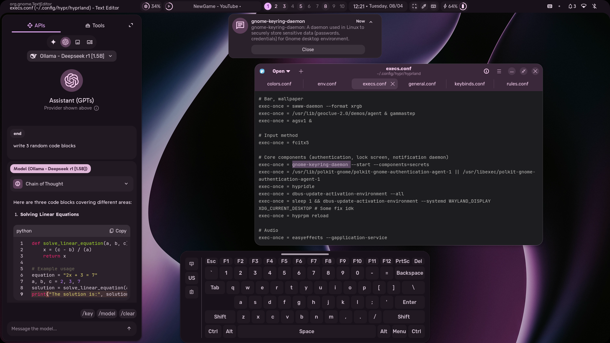
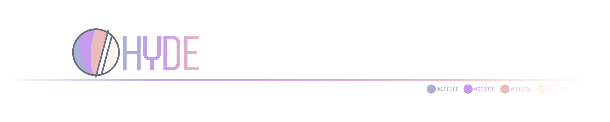
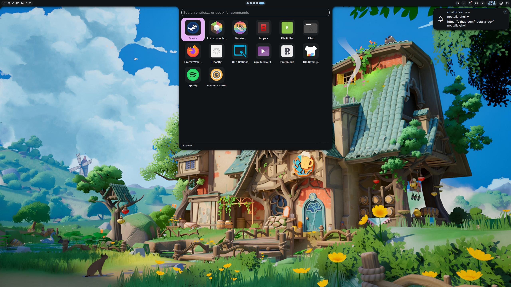
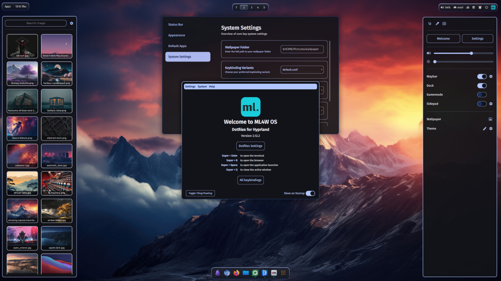
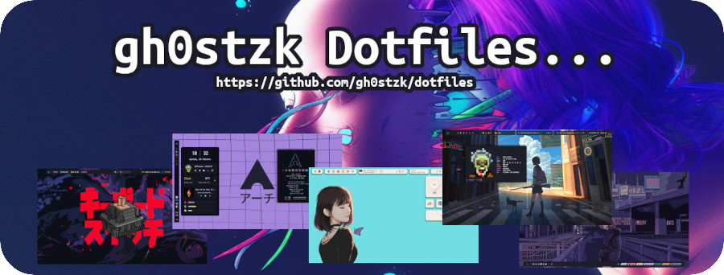
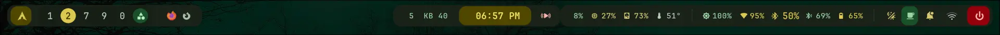
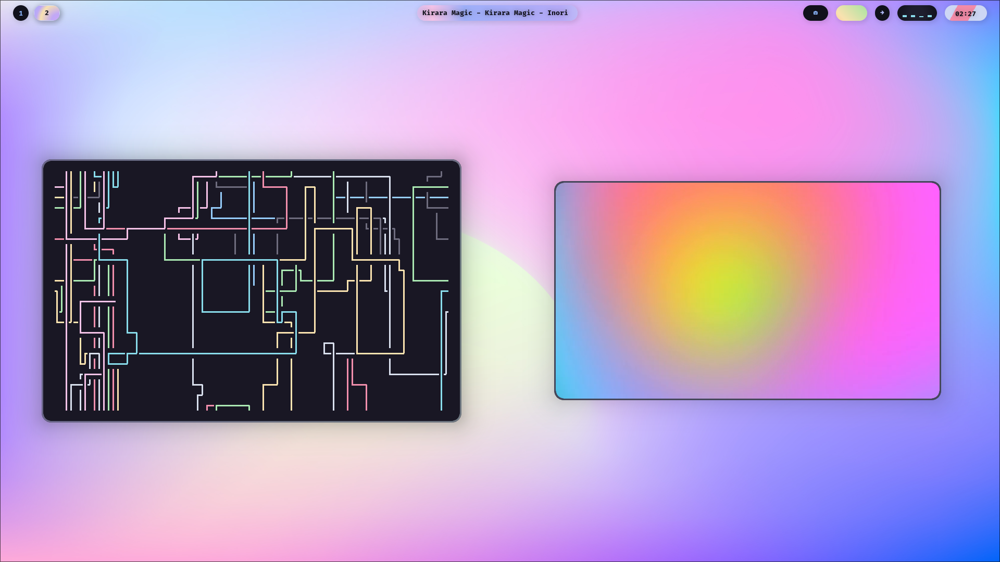
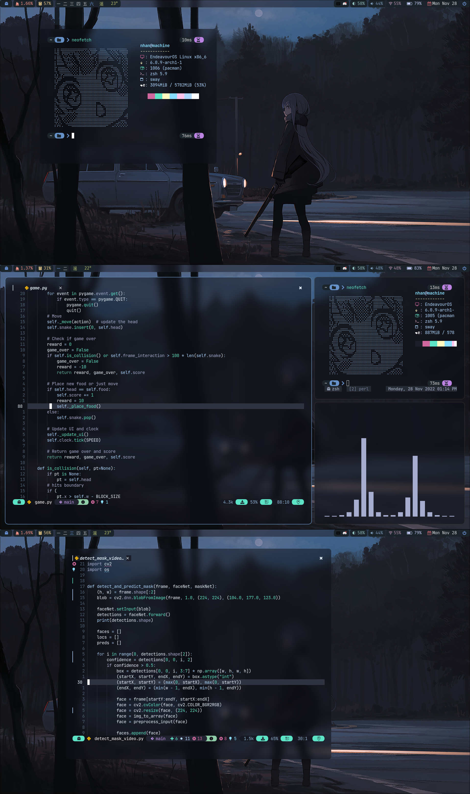
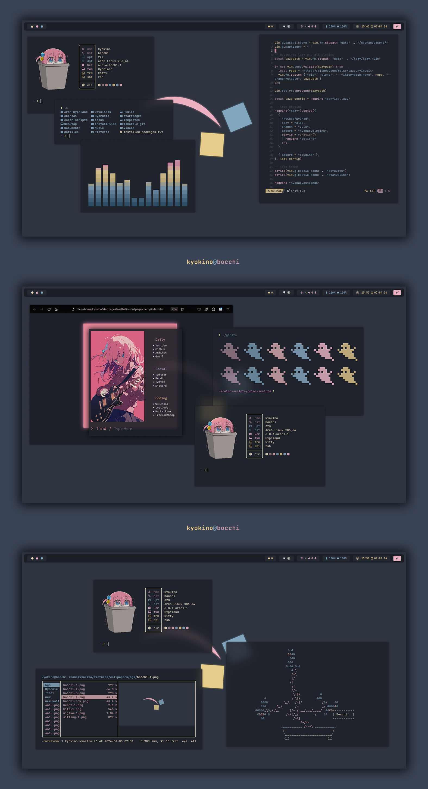

Cloned every significant Hyprland and KDE dotfile repo from GitHub. Real screenshots from each repo's own assets. Config files examined by hand. Letter grades assigned against upstream defaults.









| Program | end4 13.9k★ | hyde 8.7k★ | ml4w 4.6k★ | jakoolit 3.3k★ | spelljinxer 510★ | snes19xx | sameemul 858★ | gh0stzk 4.5k★ | dusklinux 2k★ | noctalia 5.5k★ |
|---|---|---|---|---|---|---|---|---|---|---|
| hyprland | S | A | A | S | B | A | B | A | A | A |
| waybar | F | A | S | S | A | C | C | A | A | A |
| kitty | A | B | C | S | B | B | F | B | B | B |
| rofi | F | B | B | A | A | S | A | A | A | A |
| btop | F | C | B | A | S | F | F | B | B | B |
| fastfetch | F | A | C | A | B | B | B | B | B | B |
| ghostty | F | F | F | A | F | F | F | F | F | F |
| dunst | F | B | F | F | F | B | B | B | B | B |
| swaync | F | B | B | A | F | F | F | F | F | F |
| wlogout | C | S | S | S | F | F | F | B | B | B |
| fish | A | A | B | F | F | F | F | F | F | F |
| zsh | B | A | B | F | F | F | F | F | F | F |
| nvim | F | B | F | F | B | F | F | B | B | B |
| cava | F | F | F | A | A | F | F | B | B | A |
| GTK 3/4 | B | C | S | F | F | A | F | B | B | B |
| matugen | A | F | A | F | F | F | F | F | F | F |
| wallust | F | A | F | A | F | F | F | F | F | F |
| pywal | F | F | F | F | A | F | F | F | F | F |